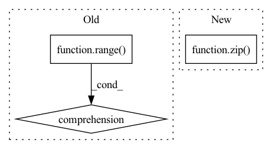

Pattern ID :1865
Before Change
// "embedding": EmbeddingDropout(embedding_dropout, vocab_size, device),
"layer": [
VariationalDropout(layer_dropout, hidden_size, device)
for _ in range( num_layers)
],
"time": [
VariationalDropout(time_dropout, hidden_size, device)
for _ in range(num_layers)After Change
self.dropout_modules = {
"layer": [
VariationalDropout(dropout, size, device)
for dropout, size in zip(
[embedding_dropout]
+ [layer_dropout]
* num_layers, // Use different rate after embeddings
[hidden_size * 4] * num_layers
+ [hidden_size], // We don"t have gates in the last layer
)
],
"time": [
VariationalDropout(time_dropout, hidden_size * 4, device)
for _ in range(num_layers)In pattern: SUPERPATTERN
Frequency: 3
Non-data size: 3
Instances Fragment ID: 4609568
Project Name: kaleidophon/nlp-uncertainty-zoo
Commit Name: 9f3516a6c83f02bc0beae9489f248823d46dfb84
Time: 2021-06-21
Author: dennis.ulmer@gmx.de
File Name: src/dropout.py
M Class Name: VariationalLSTMModule
N Class Name: VariationalLSTMModule
M Method Name: __init__(11)
N Method Name: __init__(11)
M Parent Class: nn.Module
N Parent Class: nn.Module
M File Name: src/dropout.py
N File Name: src/dropout.py
M Start Line: 94
M End Line: 115
N Start Line: 131
N End Line: 141
Before Change
self.to_embed = nn.Embedding(num_tokens, dim) if exists(num_tokens) else nn.Identity()
self.layers = nn.ModuleList([Residual(PreNorm(dim, gMLPBlock(dim = dim, dim_ff = dim_ff, seq_len = seq_len, heads = heads, window = window))) for i in range( depth) ])
self.to_logits = nn.Sequential(
nn.LayerNorm(dim),After Change
window = cast_tuple(window, depth)
layers = nn.ModuleList([])
for ind, w in zip( range(depth), window) :
layer_blocks = nn.ModuleList([
PreNorm(dim, gMLPBlock(dim = dim, dim_ff = dim_ff, seq_len = seq_len, heads = heads, window = w))
]) Fragment ID: 4609569
Project Name: lucidrains/g-mlp-gpt
Commit Name: 7642e36ff19c6b299a77e5c1ace038e9e6726202
Time: 2021-05-20
Author: lucidrains@gmail.com
File Name: g_mlp_gpt/g_mlp_gpt.py
M Class Name: gMLPGPT
N Class Name: gMLPGPT
M Method Name: __init__(1)
N Method Name: __init__(1)
M Parent Class: nn.Module
N Parent Class: nn.Module
M File Name: g_mlp_gpt/g_mlp_gpt.py
N File Name: g_mlp_gpt/g_mlp_gpt.py
M Start Line: 188
M End Line: 195
N Start Line: 194
N End Line: 215
Before Change
):
self.cells = [
lstm_cell_type(input_size, hidden_size, **lstm_cell_kwargs).to(device)
for _ in range( num_layers)
]
self.input_size = input_size
self.hidden_size = hidden_size
self.num_layers = 0After Change
device=device,
**lstm_cell_kwargs
).to(device)
for in_size, out_size in zip( layer_sizes[:-1], layer_sizes[1:])
]
self.input_size = input_size
self.hidden_size = hidden_size
self.num_layers = 0 Fragment ID: 4609565
Project Name: kaleidophon/nlp-uncertainty-zoo
Commit Name: 9d09a1510e9130c547c50d1a18c80ed3ffe9cbbb
Time: 2021-08-11
Author: dennis.ulmer@gmx.de
File Name: nlp_uncertainty_zoo/lstm_variants.py
M Class Name: CustomLSTMLogic
N Class Name: CellWiseLSTM
M Method Name: __init__(8)
N Method Name: __init__(8)
M Parent Class: nn.Module
N Parent Class: nn.Module,ABC
M File Name: nlp_uncertainty_zoo/lstm_variants.py
N File Name: nlp_uncertainty_zoo/lstm_variants.py
M Start Line: 207
M End Line: 208
N Start Line: 204
N End Line: 213